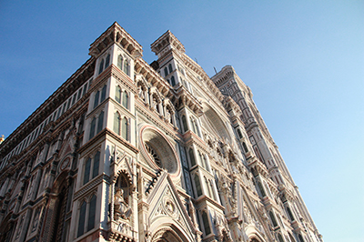

PHOTOGRAPHY
I love taking photographs - especially when I'm travelling overseas. Just admiring and capturing the beautiful sceneries of an unfamiliar place makes me love the place more. My main camera is my Canon 650D. Here are some of the photographs I took.
Click on the images to view in fullscreen!
